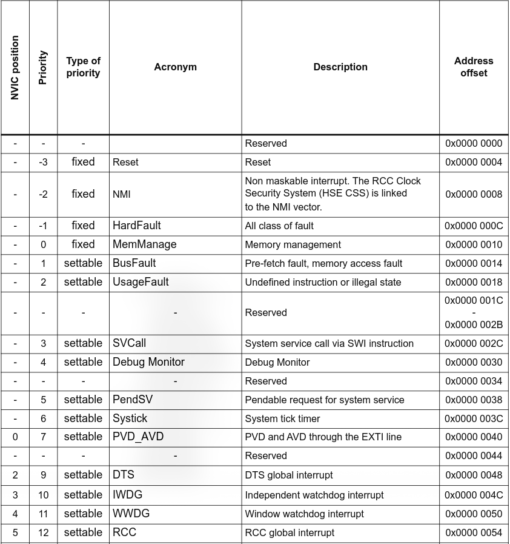

Contents
STM32 NVIC (Nested Vectored Interrupt Controller) Explained
ARM Cortex-M's NVIC (Nested Vectored Interrupt Controller) is what lets you define and use interrupts/exceptions on the STM32.
This article is going to cover exactly that from the ground up, starting at what interrupts even are.
Note that this is written from the ARM Cortex-M7 reference manuals. Some of these registers do not exist on other Cortex-M CPUs, so check your respective ARM reference manual to find which you have.
If you've tried looking for information on the NVIC through the STM32 documentation, you've probably found a distinct lack of… anything beyond the acknowledgement ”yeah, there is indeed an NVIC!”
That's because the NVIC is tightly coupled with the CPU, so you'll only find the in-depth, relevant info on the ARM Cortex-M architecture reference manuals.
So let's start!
Overview
The NVIC handles interrupts and exceptions.
That's it! If you know what these are, you're done with the overview and can move to the registers section
If not, here you go:
An interrupt is a piece of code that gets executed on-the-fly when a certain 'event' happens. It suspends execution of your regular firmware code until it executes.
That 'event' is called an ISR (Interrupt Service Routine) and it can be:
- from a peripheral (e.g. UART, timers)
- from a GPIO pin
- from software
- from the Cortex-M processor itself (e.g. HardFault, when something goes catastrophically wrong) - in this case they're called exceptions
Let's use an example: you configure UART in interrupt mode, where it generates an interrupt when the buffer is 50% full. As the buffer gets filled up and hits that 50% threshold, the UART controller sends an IRQ (Interrupt ReQuest) to the core. The NVIC sees this IRQ and is responsible for honouring it, as per your UART configuration. It looks up what function you defined to run as your ISR upon this IRQ being received, the hardware performs a 'context switch', and the ISR gets executed.
A 'context switch' is what happens when the core jumps from one task (your main code), to another (your ISR). In order to know where to return and continue your code from after the interrupt is handled, it saves a few pieces of information to the stack memory, such as the stack pointer and the program counter register values. It is restored once the ISR is finished.
There is one caveat to this rule: the reset exception.
When a reset occurs, something called the ’reset handler' is called. Because the MCU has been reset and everything is in its default value, there is no point in saving any context, so the reset ISR just starts execution immediately.
You can see the reset handler's vector table entry in the vector table section.
Interrupt Timing
Interrupts are random, they can fire at any point. As such, there are different ways that different timings are handled. Most are basic, but there are a few optimisations.
Standard Timing
When interrupts fire one after the other, there's not much to see, it's the standard behaviour from the UART example above, example timing diagram below:
What's happening here is this:
- main task is running
- IRQ gets generated, so the NVIC gets to work by first saving the current context
- the correct ISR to handle the interrupt is executed
- the context is restored and the main task continues running
- it's repeated again with another ISR
Nested Interrupts
There are no rules, however, that prevent an interrupt from firing during another interrupt. In that case, execution of interrupts happens according to their priority.
An interrupt/exception's priority is determined by an integer - the lower the value, the higher the priority and the more urgent the interrupt is treated as.
Here's what would happen if an interrupt fires in the middle of another one, and the new interrupt has a higher (lower number) priority:
What happened in this case is:
- ISR A is already running when ISR B gets requested externally
- ISR B is higher priority (lower number), so the NVIC performs a context switch from ISR A and starts execution of it
- as normal, when ISR B is complete, there's a context restore
- the lower priority (higher number) ISR A continues execution from where it got interrupted
- when it finishes, there's another context restore, and the main application continues from where it got interrupted
Tail-Chaining
Interrupts also work the other way round - if an ISR with lower priority (higher number) gets called as a higher priority (lower number) ISR is already executing, it must wait for the currently-executing higher priority ISR to complete.
This takes away a certain amount of control from the programmer, as there's a lower amount of control over interrupt latency, however, tail-chaining is also something beneficial for many pieces of firmware.
Imagine this: ISR A with priority level 1 is executing. At some point during its execution, ISR B with priority 3 fires - but I can not preempt ISR A and begin execution as its priority isn't high enough; it must wait.
Once ISR A finishes execution, no context restore needs to be performed, ISR B is already waiting for execution. If a restore happened, it would be redundant; the restore would immediately need to be followed by a context save in preparation for ISR B to execute, so it can just be skipped.
Instead of performing such wasteful instructions, the processor instead performs a tail-chain, that is, it just looks at the vector table* entry for ISR B and immediately jumps to execute the function, saving precious clock cycles. The context restore is only performed once there is no more tail-chaining to do, or a higher priority ISR interrupts as, as with the nesting section above.
Here's a visual:
This saves a lot of processing power - so much that ARM themselves recommend writing interrupts with as few priority levels as possible, to take advantage of tail-chaining instead of wasteful context switching.
* A vector table is just an array with pointers to all ISR functions, more details in a section further down, and a code example is in the bare-metal startup article.
Late Arrival
This is another neat trick by the NVIC that combines interrupt priority and the tail-chaining we just learned about to make interrupt handling more efficient.
Just how an interrupt can fire halfway through another interrupt, it can fire during a context save.
If a lower priority interrupt fires and begins the context save, then a higher priority one fires during the context save, there is no need to do even more context switching - the order of interrupts can just be swapped and the lower priority one can be tail-chained - the NVIC is fast enough to do that.
So instead of executing the lower-priority ISR that was fired first, the core will execute the higher priority ISR that fired during the context save, and just handle the lower priority one later. As this puts the lower priority one as pending, it can just immediately start executing after the higher priority one with just a tail-chain in between.
Here's the visual:
Late Arrival On Context Restore
On certain architectures (e.g. the modern Cortex-M 7), if a new interrupt arrives during a context restore (when the stack is being actively popped), it can be aborted and the new ISR can be tail-chained directly.
I'll be honest, I have no idea how this is done. It might be private information, it might be written in some little patent, or I might just be overlooking it in my research.
My best guess* is that since the recently popped stack still has the old values just past the reach of the stack pointer, the stack pointer can just be incremented as if nothing was ever popped: that's just a single instruction. But it's just my theory...
Vector Table
In the embedded world, a vector is a memory address. So a vector table is a table of memory addresses. More specifically - in our case - an interrupt vector table is a table containing the memory addresses of our ISR functions.
Here's a screenshot of the first few entries from the ST RM0477 refers nice manual:

If you notice, the very first entry at offset 0x00 is reserved. That's because of its interaction with the IPSR (Interrupt Program Status Register). IPSR is loaded with the value of the ISR (the ‘NVIC Position' column from the image) at the start and end of the ISR's execution.
Upon a reset and when no exception is being executed, the IPSR is set to 0. This means you can't have an interrupt at offset 0, as a IPSR holding 0 will signal its execution. When the IPSR is 0, that indicates thread mode, aka normal program flow and execution.
And if I haven't made it clear, the vector table is a real thing in memory, not just something for your notes, and it's very much used by the NVIC.
On Cortex-M chips, the vector table is positioned at the very beginning of flash memory (that's 0x08000000, its memory map). It's simply an array of addresses to the ISRs, no additional information like the last image from the STM32.
There is just one twist which involves the values marked as ’reserved'. Usually values like this are always treated as ”keep at 0 - they're for potential future functionality”. The very first entry of the interrupt vector table is different - the above image marks it as reserved because it's used to read off the initial MSP (Main Stack Pointer) register value upon a reset of the MCU. You'd usually set it like this, unless you have a specific reason not to:
// not needed for this example, but this is where the vector table starts from
#define FLASH_BASE 0x08000000
// SRAM base address, may be different for you
#define SRAM_BASE 0x24000000
// your SRAM size - example 64KB
#define SRAM_SIZE 1024U * 64U
// this is your initial MSP value at vector table offset 0
#define INIT_MSP + SRAM_SIZE
Also, notice the priority levels, especially of the first 3 interrupts? While you are able to assign different interrupt priorities and change the defaults of interrupts not labelled 'fixed', you can only set priority levels at 0-255, meaning nothing will be able to surpass the priority of the first 3 interrupts, and you can at best merely match the priority of the fourth - the MemManage one.
An example vector table definition is given in the bare-metal startup article. I won't cover what each individual ISR is supposed to do or when it's triggered, there are details on those within each respective article I write - if I haven't written one yet, feel free to search it up.
External Interrupts
Interrupts without an 'NVIC position' from the image above are non-external interrupts which are defined architecturally by ARM and thus can not be changed in any way (talking about their positions and order, you can change the priority level of some as we discussed).
Interrupts from offset 0x40 on the table are external interrupts - they are defined by the vendor you get your chip from and so you should look at the relevant documentation to find them. They also have an 'NVIC position', which is their external ISR number in the case of the RM0477 reference manual.
This will be relevant in a second.
NVIC Registers
ICTR Register
Despite the claim that the M7’s NVIC architecture supports up to 240 interrupts, that depends on what vendor you get your board from. When ARM licenses a chip to a vendor, one of the things the vendor decides is how many interrupts they want to have hardwired and available to the programmers.
In this case, ST decided the H7RS should have 150 total interrupts available, which is what you'd get if you checked the value of this register.
It is hard-wired - writing to this register will do absolutely nothing and it won't magically give you more interrupts to work with.
Note that the number is indicative of a range rather than being the whole picture - it tells you the upper bound of how many interrupts you have. Here's the formula to calculating that upper bound:
(ICTR + 1) * 32
STIR Register
If you want to explicitly trigger a specific interrupt via software, you can enter its ID* into the lower 9 bits of this register.
It's write-only, so reading will not give you anything worthwhile.
What writing does is change the specific ISR to pending - but which one? Well the ID is its external ISR number (the one I mentioned at the end of the vector table part). So external ISR 0 is going to be called by writing 0, external ISR 1 by 1, etc.
* This can be calculated if your datasheet doesn't give it to you - it's the ISR's position in the vector table minus 16. E.g. if the ISR is at offset 0x50 of the vector table and each ISR pointer takes up 4 bytes of memory in a 32-bit architecture like the STM32, its position in the vector table is 21 (from 0x50 / 4), so its ID is 4.
NVIC_ISERx Register
This is how external interrupts are enabled (Interrupt Set Enable Register).
The lower case ’x' in the name is replaced by a number 0-15*, where each register corresponds to a range of 32 interrupts. The lowest ISR number it corresponds to is 32 * x, and the highest is 31 + (32 * x).
The register utilises all 32 bits in the form of a bitfield, where each bit corresponds to 1 ISR, starting from the register's lower bound. Bit ’m' is for ISR (32 * x) + m.
Writing 1 enables the interrupt, 0 has no effect, and reading tells you if the interrupt is enabled or not.
* When x = 15, bits 16-31 of that register are reserved.
NVIC_ICERx Register
Exactly the same as NVIC_ISER, except writing 1 disables the interrupt.
Everything else, even reading the register, has the same behaviour.
NVIC_ISPRx Register
Exactly the same as NVIC_ISER, except:
- writing 1 makes the interrupt pending
- reading tells you if its pending or not
Everything else has the same behaviour.
NVIC_ICPRx Register
Exactly the same as NVIC_ISPR, except writing 1 makes the interrupt not pending.
Everything else, even reading the register, has the same behaviour.
NVIC_IABRx Register
Tells you if an interrupt is active or not.
Targeting behaviour (which ISR you affect) is the same as the previous registers.
Where it differs is that this one is read-only. Writing has no effect and reading tells you if the interrupt is active.
NVIC_IPRx Register
This controls the priority levels of interrupts.
If you recall, interrupts can have a priority of 0-255, which is represented by 8 bits. This means the 32-bit register is split into 4.
’x' in the register name is between 0 and 123.
Each register affects interrupts 4 * x to (4 * x) + 3. The lower-order byte affects the former, while the higher-order byte affects the latter. The middle two are distributed in the same manner.
Exception Configuration
So far we've talked about the external interrupts ISR0 onwards. All registers above only affect those. There's a different process to configure the internal interrupts, aka exceptions.
It starts in the SCB (System Control Block) inside of the SCS (System Control Space).
The SCS is a 4KB region that defines some registers for controlling certain things.
One of those things is the NVIC.
ICSR Register
The Interrupt Control and State Register let's you control and see the status of these exceptions:
- NMI
- PendSV
- SysTick
Amongst other things, this register lets you set the NMI pending state, and set/clear the pending state of the other 2 exceptions. You can't clear the pending state of the NMI, likely because the only exception which can preempt it through priority is the reset handler, but that only runs upon a reset and so the NMI would have no business being pending at that point.
VTOR Register
Vector Table Offset Register, as it implies it stores the address of the vector table.
Usually you'd put that at 0x08000000 as that's where most firmware puts it (flash memory base), but you can modify this register in your reset handler to change the address to whatever you want. Just make sure you leave the initial MSP value and reset handler pointer as the first 2 words at 0x08000000, besides that the vector table can be wherever.
SHPR1/SHPR2/SHPR3 Register
System Handler Priority Register 1-3 allows you to configure the priority level of the configurable exceptions.
Starting from SHPR1 and its low-order byte, you can configure the MemManage exception's priority, going up to SHPR3 and its high-order byte, where you can configure SysTick exception's priority.
Each exception gets an 8-bit (1-byte) field in the register, just like the NVIC_IPRx.
SHCSR Register
The System Handler Control and State Register offers you control over 3 things:
- Enabling/disabling some exceptions
- Setting/clearing pending of some exceptions
- Setting/clearing active of some exceptions
Active means the exception is currently running. So this can only be done from inside the exception on a single core, or from another core on a multi-core CPU. It doesn't actually make the interrupt fire, it just marks it as if it's already ongoing and can cause errors if you're not careful and on top of it with clearing after setting this bit.
I'm not sure where this may be useful, maybe if you're coding your own RTOS?
CFSR Register
The Configurable Fault Status Register provides information on exceptions:
- bits 0-7 on MemManage
- bits 8-15 on BusFault
- bits 16-31 on UsageFault
It simply provides metadata on what happened around the exception.
Those bits are split and explained in the ARMv7-M Architecture Reference Manual, have a look at them there, or for your respective CPU.
HFSR Register
HardFault Status Register, similar in concept to the CFSR register, but only dedicated to HardFault.
BFAR Register
BusFault Address Register.
Upon a BusFault exception, it stores the address at which the data access resulted in a fault. BFSR.BFARVALID has to be set for this to read a useful value.
Conclusion
That's all of the relevant info I thought was worth sharing on here!
The NVIC is one of those topics that's awfully technical and complex once you start to look into the registers, and there's not much information to share besides what the registers do (not including the whole intro that explained what the NVIC is and what interrupts are) as that's just how the ARMv7-M Architecture Reference Manual is written (or any ARM reference for that matter).
Luckily it's a fairly simple topic: event happens, CPU responds as soon as it possibly can, and it's widely used in things like non-blocking code so it's important to be familiar with!
Sources
ARM - ARMv7-M Architecture Reference Manual STMicroelectronics - STM32H7 NVIC Presentation Young Won Lim - Nesting, Tail Chaining, and Late Arrival